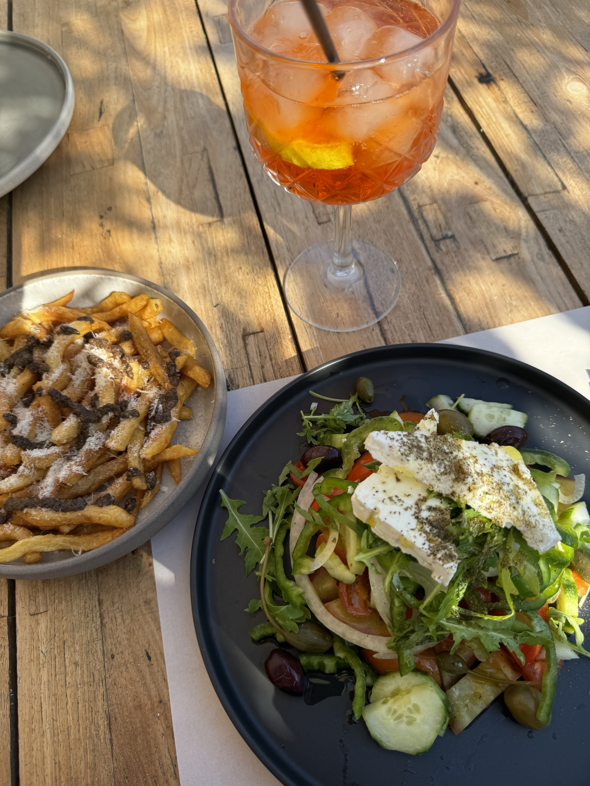

CREAMY
SAVORY
IRRESISTIBLE
Greek Salad
Description
A fresh and colorful Mediterranean salad made with crisp vegetables, olives, and feta cheese. It's light, healthy, and perfect as a side dish or a quick lunch.
Ingredients
- 2 cucumbers, sliced
- 3 tomatoes, diced
- 1 red onion, thinly sliced
- 1 green bell pepper, sliced
- ½ cup black olives
- 200 g feta cheese, crumbled
- 3 tbsp olive oil
- 1 tbsp red wine vinegar
- Salt and black pepper to taste
- 1 tsp dried oregano
Steps
- In a large bowl, combine cucumbers, tomatoes, onion, and bell pepper.
- Add olives and crumbled feta cheese on top.
- In a small bowl, whisk together olive oil, vinegar, salt, pepper, and oregano.
- Pour the dressing over the salad and toss gently.
- Serve immediately or chill for 15 minutes before serving.